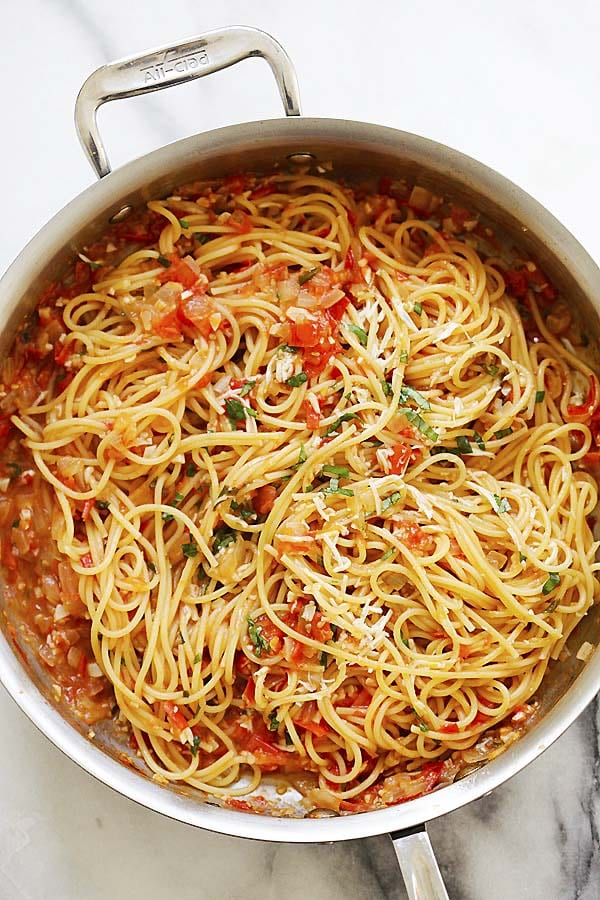

You've chosen to make pasta! While easy and fairly quick to make, pasta can be very tasty and always satisfying.
How do you cook pasta and sauce in one pot or one pan?
One pot pasta is a time saver because the pasta is cooked right in the sauce, in your pot or pan.
This recipe yields delicious pasta as the spaghetti noodles soak up all the goodness of the ingredients.
This easy pasta recipes is quick and ready in 20 minutes.
It’s also one of the best pasta dishes ever!